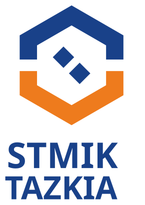
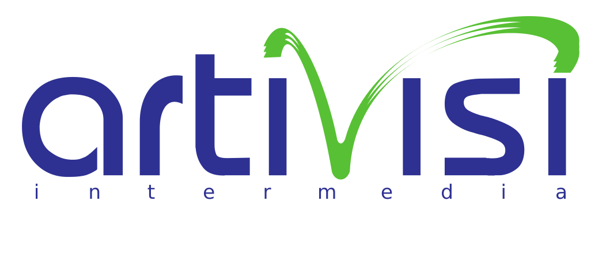
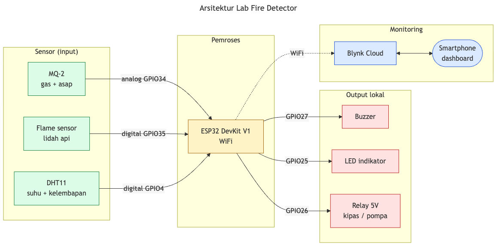
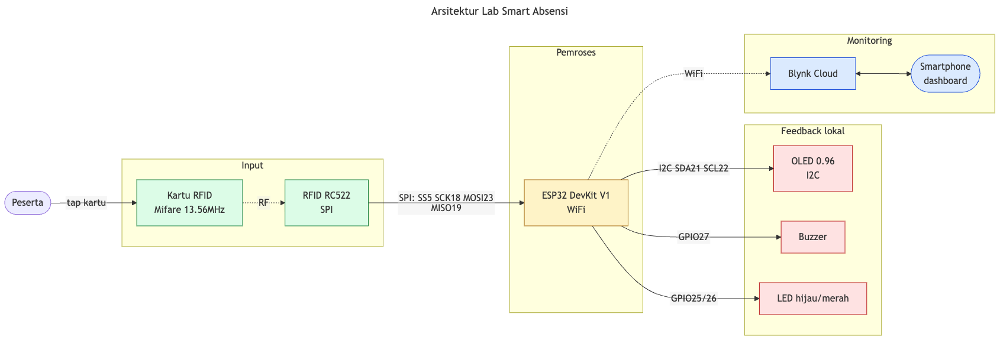
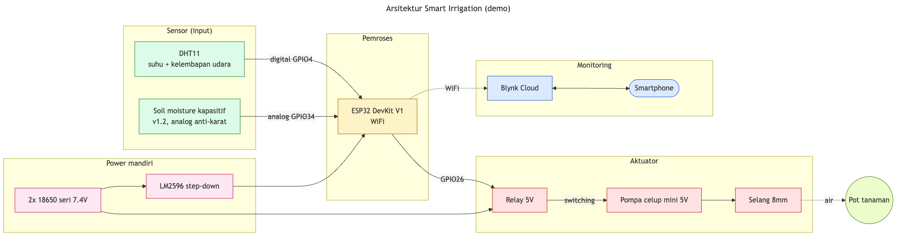

Fire Detector (Monitoring Kualitas Udara) & Smart Absensi · ESP32
Format peer-led: asisten memandu lab, trainer floating mengawasi & tangani eskalasi.
Menghubungkan alat fisik ke internet supaya datanya bisa dipantau & dikontrol dari jauh. Pola dasar tiap proyek di pelatihan ini sama:
GPIO bisa jadi input (baca sensor) atau output (nyalakan buzzer/LED). Pin analog baca angka 0–4095; pin digital cuma HIGH/LOW.
| Komponen | Pilihan | Catatan |
|---|---|---|
| Toolchain | Arduino IDE 2.x | Paling ramah pemula |
| Board support | esp32 by Espressif | Via Boards Manager URL |
| Driver USB | CP210x / CH340 | Sesuai chip di board |
| Cloud / dashboard | Blynk | Virtual Pin V0, V1, … |
| Token & WiFi | secrets.h | Tidak ikut ter-commit |
Detail langkah ada di workbook Bab "Fundamental IoT & Setup".
void setup() {
// jalan sekali saat board nyala:
// siapkan pin, mulai WiFi & Blynk
}
void loop() {
// jalan berulang terus-menerus:
// baca sensor, kirim data, aktuasi
}Semua firmware lab ditulis lengkap di workbook — peserta tinggal copy-paste & upload.
| Lab | Komponen inti | Konsep |
|---|---|---|
| Fire Detector (+ kualitas udara) | ESP32, MQ-2, flame, DHT11, buzzer, relay | Sensor gas analog, ambang, alert, aktuasi |
| Smart Absensi | ESP32, RFID RC522, OLED, buzzer | SPI, baca kartu, kirim log ke cloud |
| Smart Irrigation (demo saja) | ESP32, soil moisture, relay, pompa | Sama dgn Fire Detector, kasus beda |
2 lab hands-on berjalan konkuren. Smart Irrigation hanya didemokan trainer di penutup.


analogRead) vs digital (digitalRead)Saat konsep ini muncul di kedua lab, kedua lab di-pause untuk plenary singkat, lalu lanjut konkuren.

| Peran | Fire Detector | Smart Irrigation |
|---|---|---|
| Sensor analog | MQ-2 (gas) | Soil moisture (kelembapan) |
| Logika | gas > ambang → bahaya | tanah > ambang → kering |
| Aktuator (relay) | kipas/pompa exhaust | pompa penyiram |
| Power | USB | Baterai 18650 + LM2596 (portabel) |
Struktur identik — yang berubah hanya makna angka sensor & apa yang diaktuasi. Pompa selalu lewat relay, tidak langsung dari pin ESP32. Prototype dibawa trainer; bukan lab peserta.
Isi secrets.h sendiri (token Blynk + WiFi) — contoh ada di secrets.h.example dalam tiap zip. Semua materi juga ada di repo GitHub.
Terima kasih — Endy Muhardin · STMIK Tazkia & PT ArtiVisi Intermedia